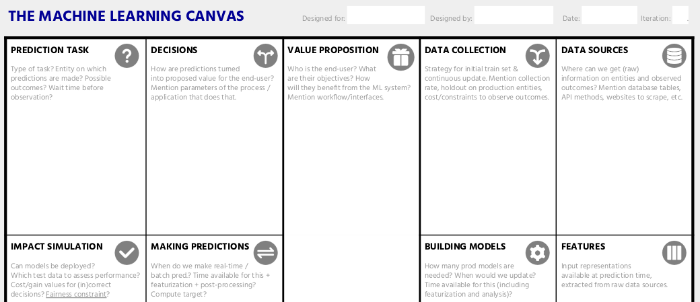

ML Canvas
We saw in previous topics how to document code in ML projects.
Question 1
An ML product is much more than the source code that generates the models and APIs. Taking into account the life cycle of the models, it is important to know the value proposition generated by the model, who the end user is, how they will use it the model, what the data sources will be, etc.
Documenting these questions will not only support the long-term survival of the model, but also ensure that these questions have been asked and check whether there is alignment between the business and data science areas.
An option
Instead of generating long and purposeless documentation, it is more appropriate to be concise and focus on the information that really matters to users and maintainers of the model.
Tip! 1
When documenting, it is important to think about how to generate the most value with the least effort.
One option for documenting ML projects is using a canvas. In this case, the one provided by ownml.co.

ML Canvas!
This ML Canvas consists of a single page of concise product information!
Check the ml_canvas.pdf, ml_canvas.odt and ml_canvas.docx files available in this course’s repository.
ML Canvas documentation suggestions include:
-
Prediction task: Type of task? Entity on which predictions are made? Possible outcomes? Wait time before observation?
-
Decisions: How are predictions turned into proposed value for the end-user? Mention parameters of the process / application that does that.
-
Value proposition: Who is the end-user? What are their objectives? How will they benefit from the ML system? Mention workflow/interfaces.
-
Data colection: Strategy for initial train set & continuous update. Mention collection rate, holdout on production entities, cost/constraints to observe outcomes.
-
Data sources: Where can we get (raw) information on entities and observed outcomes? Mention database tables, API methods, websites to scrape, etc.
-
Impact simulations: Can models be deployed? Which test data to assess performance? Cost/gain values for (in)correct decisions? Fairness constraint?
-
Making predictions: When do we make real-time / batch pred.? Time available for this + featurization + post-processing? Compute target?
-
Building models: How many prod models are needed? When would we update? Time available for this (including featurization and analysis)?
-
Features: Input representations available at prediction time, extracted from raw data sources.
-
Monitoring: Metrics to quantify value creation and measure the ML system’s impact in production (on end-users and business)?
Tip! 2
Not everything in this documentation will make sense in every project.
You can remove topics or add others that you consider relevant!
Important!
Some topics, such as monitoring, will still be studied in the course. You can ignore it for now!
Tasks!
Question 2
Question 3
Question 4
Question 5
Question 6
Question 7
References
- Living Documentation. Martraire, C.
- Pipes figure 1.9 from Living Documentation. Martraire, C.
- The product is Docs. Gales, C.
- Documentation of Machine Learning Software. Hashemi et. al.
- https://www.sphinx-doc.org/
- https://swimm.io/learn/code-collaboration/comments-in-code-best-practices-and-mistakes-to-avoid